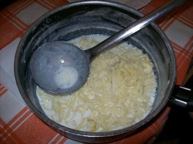

(i tagliarïll' c'u luàtt')
Era un giorno di fine aprile e la primavera avanzava esuberante con i suoi colori, le sue tante sfumature di verde, le sue foglie turgide e i primi frutti cominciavano a maturare sotto al sole compiacente.
Finalmente i contadini potevano cominciare ad accudire i campi, gli orti i giardini e i pastori portare al pascolo greggi e mandrie. Un giorno capitò da quelle parti un mendicante. Era sporco, indossava una tunica che certamente aveva conosciuto tempi migliori, ora lacera, probabilmente in origine era bianca. Ai piedi qualcosa che ricordavano vagamente dei sandali, capelli lunghi e stopposi, un volto scarno ma dai lineamenti gentili, la barba ben cresciuta anche se incolta, un passo lento, stanco, due occhioni dallo sguardo profondo, che ti scrutavano l’anima, speranzosi. Si aggirava discreto nelle campagne villapianesi. Da lontano vide delle pecore al pascolo.
Con gli occhi bassi si avvicina in modo discreto al pastore, gli chiede qualcosa da mangiare, un po’ di formaggio, un tozzo di pane, gli sarebbe bastato anche solo un sorso di latte. Il pastore, dopo averlo guardato da capo a piedi, rispose che le pecore non avevano latte per cialtroni e vagabondi. Il mendicante sorrise triste al pastore e andò via a capo chino chiedendosi perché gli avesse negato un sorso di latte. C’erano molti agnellini quindi alle pecore non mancava il latte.
Riprese il suo cammino e dopo un po’ incontrò un altro pastore. Vide tante mucche in un vasto campo e molti vitellini che si rincorrevano, spensierati, nel prato ricco di erba dove le mamme pascolavano tranquille.
Anche qui il mendicante si avvicinò al mandriano e anche a lui chiese, come al pastore precedente, qualcosa da mangiare, anche solo un sorso di latte gli sarebbe bastato e che gliene sarebbe stato eternamente grato. Pensò che il mandriano avendo tante mucche con i vitelli, non gli avrebbe negato un poco di latte. Niente, anche quest’ultimo lo mandò via in malo modo dicendogli che le mucche non avevano latte e quel poco disponibile bastava appena per i vitellini. Al mendicante gli si velarono gli occhi di lacrime e una tristezza melanconica gli strinse il cuore. Ringraziò con gentilezza e, a testa china, andò via riprendendo il suo mesto cammino.
Volgeva oramai a sera, il poveruomo stanco, si fermò ad una sorgente nei pressi di un arido torrente costeggiato da altissimi pini e rigogliosi giardini coltivati sapientemente.
Alberi da frutto carichi di arance, nespole, ciliegi. Una esplosione di colori di cui la natura sembrava vantarsene, era come se indossasse il vestito della festa che però contrastava con le pietre grigio chiaro, vive, bollenti per il caldo sole al quale erano esposte nel largo letto del fiume senza acqua. Si fermò vicino ad un enorme masso tra gli alberi. Si sedette e bevve con avidità quell’acqua che sgorgava ribollente, gorgogliante dalle viscere della madre terra. Era fresca, pura; il silenzio interrotto solo dal canto degli uccelli e dal leggero mormorio dell’acqua, era rilassante e invitava al riposo. Di lì a poco sentì uno scampanellio che si avvicinava. Era un gregge che, guidato dal suo pastore, rientrava all’ovile.
Passandogli vicino chiese, speranzoso, anche a lui qualcosa da mangiare, gli sarebbe bastato anche un sorso di latte. Purtroppo anche quest’ultimo non gli diede niente anzi, lo redarguì in malo modo dicendogli che con quel fisico prestante avrebbe potuto guadagnarsi facilmente da mangiare. Amareggiato, deluso, quasi incredulo per tanta insensibilità verso il prossimo, il mendicante riprese lentamente il suo cammino. Ma dove sarebbe andato?
A sera, i pastori rientrati nelle masserie, si apprestarono alla mungitura però stranamente, gli animali non avevano latte. Che strano, pensò ognuno di loro.
Ma non finì lì perché anche nei giorni seguenti né le pecore, né le capre e nemmeno le mucche, produssero il benché minimo quantitativo di latte. Solo i vitellini, gli agnellini e le caprette riuscivano a succhiare il latte bastante a nutrirsi oltre quello, niente. I pastori erano perplessi, non era mai accaduto niente del genere e non sapevano spiegarselo.
Di lì a poco ricorreva l’Ascensione in cielo di nostro Signore e i credenti si preparavano per questa importante festa del cattolicesimo. Avvenne che, qualche sera prima della festività, venne in paese un viandante che predicando radunava intorno a sé grandi folle. Parlava del regno di Dio e di come suo Figlio stesse preparando un posto nei cieli, per ognuno dei suoi figli. Parlava di fare del bene al prossimo e che il prossimo siamo noi stessi visti dagli altri. Invitava a non girare le spalle ai bisognosi, di aiutarli per come si poteva. Molte volte anche un sorso di latte era sufficiente a rifocillare un mendicante. Le persone lo ascoltavano estasiate. Finita la predica il viandante fece un segno di croce benedicendo così tutti i presenti che si apprestarono a rientrare nelle loro povere abitazioni.
A questo punto successe qualcosa difficile da credere, da capire, da spiegare. Qualcuno girandosi gridò, incredulo, che il predicatore si era alzato verso l’alto scomparendo nell’azzurro cielo. Meraviglia, stupore. Però tutti, in quel momento, capirono che il mendicante era il Redentore, che aveva voluto salutare i suoi fedeli.
Ritornando a casa ognuno raccontò ai familiari l’accaduto. Anche i pastori che incrociarono il mendicante capirono immediatamente chi fosse il poveraccio che avevano maltrattato e che chiedeva loro solo un sorso di latte. Era Gesù che li stava mettendo alla prova.
La voce si sparse e il fatto che alcuni di loro avevano trattato in malo modo il mendicante, faceva star male tutti. Si sentivano mortificati per la loro durezza di cuore.
Pentiti del loro comportamento, volevano farsi perdonare ma non sapevano come fare. Intanto le pecore, le mucche, le capre, tutti gli animali avevano ricominciato, lo stesso giorno e come se non si fossero mai fermate, a dare il latte normalmente. Proprio questo particolare diede loro lo spunto per farsi perdonare della loro insensibilità.
Concordarono che per la prossima festa dell’Ascensione, tutti i pastori, avrebbero dato il latte dei loro animali a chiunque ne avesse fatto richiesta proprio in devozione a Gesù nel giorno della sua Ascensione. Così il giorno della festa, che si usava fare la pasta di casa con il sugo, le donne ritrovandosi con tanto latte disponibile, inventarono un nuovo piatto dedicato a quella particolare giornata. Preparano dei tagliolini con farina rigorosamente bianca, sostituirono l’acqua con il latte, aggiunsero chi un pizzico di sale, chi dello zucchero e prepararono il piatto particolare così come lo conosciamo ancora oggi. I tagliarïll’ cu u luàtt’, i tagliolini con il latte.
I tagliolini dell'Ascensione i tagliarïll' d'Ascinzion'
Ingredienti:
Farina 00
Acqua tiepida/ambiente sale o zucchero
latte 1 litro per 2 persone
Impastare con l'acqua, la farina occorrente per il numero dei commensali, fino a creare una massa morbida e consistente. Su di una spianatoia tirare una sfoglia molto sottile. Ripiegare la sfoglia più volte su se stessa. Tagliare in modo adeguato.
Mettere in pentola un litro di latte per ogni due persone, appena accenna il bollore, calare i tagliolini aggiungendo il sale o lo zucchero per come si gradisce. Pochi minuti e si serve senza scolare.
